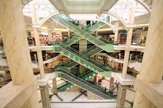
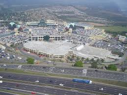

ABOUT THE PAVILION SHOPPING MALL
 The Pavilion is an iconic Super Regional Shopping Centre that is located along the warm shoreline of sunny Durban, set within the rich cultural landscape of KwaZulu-Natal.The centre was launched in October 1993 and is the oldest first generation shopping mall in KwaZulu-Natal. The iconic domes have become a symbol of dominance and familiarity. Modelled of European Architecture, these key architectural features have become a landmark.
The centre is ideally and conveniently located as the entry portal to Durban, along the N3 Highway and Main, 5 minutes from Durban, 15 minutes from the Harbour Entry Port, and 20 Minutes from King Shaka International Airport. Conveniently situated just 5 minutes from Durban, 15 minutes from the Harbour Entry Port, and 20 Minutes from King Shaka International Airport, Welcome to the home of family fun, fabulous fashion and fine food.The Pavilion offers a multitude of activities to suit the most discerning shoppers who choose to shop at 255 national and international retail outlets, or choose to satisfy their craving at one of 40 restaurants and food outlets. The exceptional jewellery outlets make shopping for gifts a treat, while the 11 Nu Metro theatres with 1 4DX theatre, Fun Company, recently refurbished Food Court and brand new Virgin Active keeps shopper captivated for hours. Come to Durban's Coolest Shopping Mall!